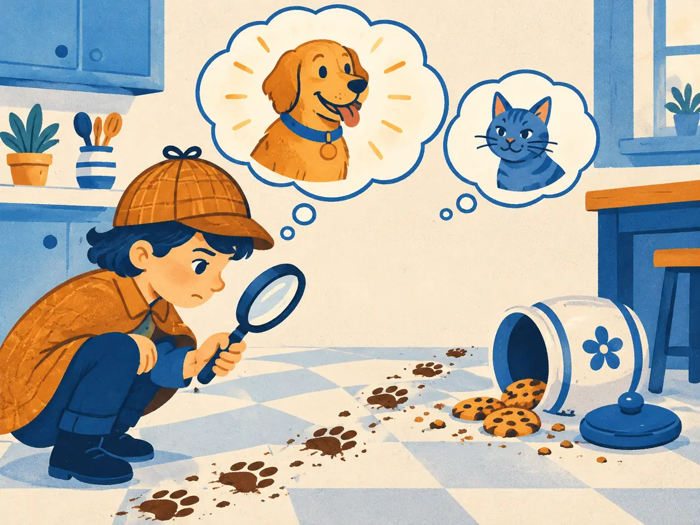

Bayes' rule & latent variables
You see the evidence and want the cause: a positive test and want the diagnosis, a photo and want the hidden code that generated it. Bayes' rule turns "how likely is this evidence, given the cause?" into "how likely is the cause, given this evidence?". It's also the reason VAEs and diffusion models train on a strange-looking quantity called the ELBO.
By the end you can
- Apply Bayes' rule to a base-rate problem and name the prior, likelihood, evidence and posterior.
- Explain what a latent-variable model is, and why its posterior $p(z \mid x)$ is usually intractable.
- State the ELBO in words and in one line of maths, and say why VAEs and diffusion models maximise it.
Take your best guess. Being wrong now helps the right answer stick later.
1% of people have a disease. A test catches 90% of sick people but also flags 9% of healthy people. You test positive. Roughly how likely is it that you have the disease?
- About 90%
- About 50%
- About 9%
- About 1%
An image generator draws a random code vector $z$ and decodes it into a picture. You're handed a photo $x$. Which code produced it?
- You can read it off directly: each image has exactly one code
- Many codes could have; you need the distribution $p(z \mid x)$, which is usually too hard to compute exactly
- The code is always the zero vector
- The question makes no sense, because codes are random
Turning P(evidence | cause) around
Thomas Bayes, an English minister, worked out how to reason from effects back to causes. He never published it: his friend Richard Price found the essay among his papers and had it read to the Royal Society in 1763, two years after Bayes died. Pierre-Simon Laplace rediscovered the idea independently in 1774 and turned it into a working tool for astronomy and population statistics.
It falls straight out of conditional probability (P1.5). The chance that a hypothesis $H$ and evidence $E$ both hold can be written two ways: $P(H \text{ and } E) = P(E \mid H)\,P(H) = P(H \mid E)\,P(E)$. Divide by $P(E)$:
$$\underbrace{P(H \mid E)}_{\text{posterior}} = \frac{\overbrace{P(E \mid H)}^{\text{likelihood}}\;\overbrace{P(H)}^{\text{prior}}}{\underbrace{P(E)}_{\text{evidence}}}$$- Prior $P(H)$: what you believed before seeing anything (1% of people have the disease).
- Likelihood $P(E \mid H)$: how well the hypothesis predicts the evidence (a sick person tests positive 90% of the time).
- Evidence $P(E)$: how likely the evidence is overall, under every hypothesis. It rescales the result so the posteriors sum to 1.
- Posterior $P(H \mid E)$: your updated belief after the evidence.
The easiest way to see it work is to count people instead of multiplying percentages:
The test is good, yet a positive result means only about 9%, because healthy people outnumber sick ones 99 to 1. Even a small false-positive rate applied to that huge group swamps the true positives. The likelihood alone (90%) is not the answer; it has to be weighed against the prior.
In the test example, which quantity is the likelihood?
- $P(+ \mid \text{disease}) = 0.9$
- $P(\text{disease}) = 0.01$
- $P(\text{disease} \mid +) \approx 0.09$
- $P(+) \approx 0.098$
The evidence term, and updating beliefs
The denominator is the step people skip. The evidence adds up every way the evidence could have happened, one term per hypothesis (the law of total probability):
$$P(+) = P(+ \mid D)\,P(D) + P(+ \mid \text{healthy})\,P(\text{healthy}) = 0.9 \times 0.01 + 0.09 \times 0.99 = 0.0981$$so $P(D \mid +) = 0.009 / 0.0981 \approx 0.092$. Because the evidence is the same for every hypothesis, you'll often see Bayes' rule written as a proportion: posterior ∝ likelihood × prior. Compute likelihood × prior for each hypothesis, then divide by the total so they sum to 1.
Bayes' rule also chains. After one positive test your belief is 9.2%; use that as the prior for a second, independent test, and the posterior becomes $\frac{0.0917 \times 0.9}{0.0917 \times 0.9 + 0.9083 \times 0.09} \approx 0.50$. Each piece of evidence moves the belief, and the order doesn't matter.
Worked example
A cookie jar is knocked over and there are muddy paw prints. In this neighbourhood 30% of the pets that wander in are dogs and 70% are cats. Prints this big come from a dog 80% of the time, but from a cat only 10% of the time.
- Likelihood × prior, dog: $0.8 \times 0.3 = 0.24$. Cat: $0.1 \times 0.7 = 0.07$.
- Evidence: $0.24 + 0.07 = 0.31$.
- Posterior: $P(\text{dog} \mid \text{prints}) = 0.24 / 0.31 \approx 0.77$. The cat was the likelier visitor, but the prints point to the dog.
Explain like I'm 5

A young detective finds the cookie jar knocked over and muddy paw prints leading to it. Two suspects: the dog and the cat.
Before looking closely, the detective thinks "cats sneak in here more often". That's the prior. Then they notice the prints are big, the kind a dog makes. That's the evidence. Putting both together, the dog's thought bubble grows bigger and the cat's shrinks. That new guess is the posterior.
Where it breaks: a real detective might find a third suspect. Bayes' rule only shares belief among the hypotheses you wrote down, and it needs numbers for how likely each one is to leave those prints.
Your turn (faded example)
20% of emails are spam. The word "prize" appears in 40% of spam emails and 2% of normal ones. An email contains "prize".
- Likelihood × prior for spam:
- Evidence $P(\text{prize})$:
- Posterior $P(\text{spam} \mid \text{prize})$, to two decimals:
A rare disease (prior 0.1%) and a test with 99% sensitivity and a 1% false-positive rate. Before computing anything, which is the best guess for $P(D \mid +)$?
- About 99%, because the test is very accurate
- About 50%
- Under 10%, because false positives from the huge healthy group outnumber true positives
- Exactly 0.1%, because a test can't change the prior
Latent variables: the hidden cause
Generative models for images, audio and video almost all assume the data comes from a hidden cause. A latent variable $z$ is a quantity the model uses but you never observe: which cluster a point came from, or a compact code that describes a whole image. The model is defined in the "generate" direction: first draw $z$ from a simple prior $p(z)$, then draw the data from $p(x \mid z)$. The probability of the data adds up every way it could have been made:
$$p(x) = \sum_z p(x \mid z)\,p(z) \qquad\text{or, for continuous } z,\qquad p(x) = \int p(x \mid z)\,p(z)\,dz$$Reading backwards, from an observed $x$ to its likely causes, is Bayes' rule: $p(z \mid x) = p(x \mid z)\,p(z) / p(x)$. With two possible causes that's easy:
Now make it realistic. In a VAE, $z$ is a vector of, say, 128 numbers drawn from $\mathcal N(\mathbf 0, \mathbf I)$ (P5.1), and $p(x \mid z)$ is a neural-network decoder. The evidence $p(x)$ becomes an integral over all of 128-dimensional space, through a network, with no formula for the answer. You could try averaging $p(x \mid z)$ over random draws of $z$, but almost every random code decodes to an image nothing like your $x$, so the estimate needs astronomically many samples. And without $p(x)$ there's no posterior $p(z \mid x)$ either. This is what "the posterior is intractable" means: not unknowable, just impossible to compute exactly at any useful cost.
Why is $p(z \mid x)$ intractable for a VAE with a neural-network decoder?
- Because the prior $p(z)$ is unknown
- Because the decoder can't compute $p(x \mid z)$
- Because $z$ is always discrete
- Because its denominator $p(x) = \int p(x \mid z)\,p(z)\,dz$ is an integral over a huge space with no closed form
KL divergence and the ELBO
If the true posterior is out of reach, approximate it. In 2013, Kingma & Welling (and, independently, Rezende, Mohamed & Wierstra in 2014) trained a second network, an encoder, to output a simple distribution $q(z \mid x)$, usually a Gaussian with a predicted mean and standard deviation, as a stand-in for $p(z \mid x)$. To measure how wrong a stand-in is, use the KL divergence from P1.6: it is never negative, zero only when the two distributions match, and not symmetric.
A few lines of algebra give an identity that holds for any $q$:
$$\log p(x) = \underbrace{\mathbb E_{z \sim q(z \mid x)}\big[\log p(x \mid z)\big] - D_{\mathrm{KL}}\big(q(z \mid x)\,\|\,p(z)\big)}_{\text{ELBO}} \;+\; D_{\mathrm{KL}}\big(q(z \mid x)\,\|\,p(z \mid x)\big)$$The last term is a KL divergence, so it's at least 0. That makes the first part a lower bound on the log-likelihood: the evidence lower bound, or ELBO. In words, it rewards codes from the encoder that let the decoder reconstruct $x$ well, minus a penalty for codes that stray from the prior. Everything in it is computable: sample $z = \mu + \sigma\varepsilon$ from the encoder (the reparameterization trick from P5.1), decode, and use the closed-form KL between two Gaussians.
Maximising the ELBO does two jobs at once. It pushes $\log p(x)$ up, so the model explains the data better, and it shrinks the gap, so the encoder's $q(z \mid x)$ moves closer to the true posterior. That is the whole training objective of a VAE (G1.1). Diffusion models use the same bound with a twist: their latents are the noisy images $x_1, \dots, x_T$, and the "encoder" is the fixed noising process from P5.1. Ho et al. (2020) showed that a simplified, reweighted version of this ELBO becomes "predict the noise that was added", the standard diffusion loss (G1.3).
For one image, $\log p(x) = -100$ nats and the ELBO is $-103$ nats. What does that tell you?
- The ELBO is wrong, since a bound can't be below the true value
- $D_{\mathrm{KL}}\big(q(z \mid x)\,\|\,p(z \mid x)\big) = 3$ nats: the encoder's approximation is imperfect
- The prior should be changed to $\mathcal N(3, 1)$
- The decoder reconstructs this image perfectly
Why do VAEs maximise the ELBO instead of the log-likelihood $\log p(x)$ itself?
Posterior ∝ likelihood × prior. Why can we drop the evidence $P(E)$ when comparing hypotheses?
- Because it's always 1
- Because it's always tiny
- Because it's the same number for every hypothesis, so it only rescales them to sum to 1
- Because it equals the prior
In the two-cluster animation, the prior was 30% A but after seeing $x = -0.5$ the posterior was 62% A. Why?
- Cluster A explains $x = -0.5$ much better (higher $p(x \mid A)$), enough to outweigh its smaller prior
- Observing data always moves the posterior towards 50/50
- The prior was updated before seeing $x$
- Cluster B has a larger variance, which always loses
Which statement about the ELBO is true?
- It is always above $\log p(x)$
- It equals $\log p(x)$ for any encoder
- It needs the true posterior $p(z \mid x)$ to compute
- It is reconstruction quality minus $D_{\mathrm{KL}}(q(z \mid x)\,\|\,p(z))$, and it is at most $\log p(x)$
(From P1.6) Suppose a lazy encoder outputs exactly the prior, $q(z \mid x) = p(z)$, for every image. What happens to the term $D_{\mathrm{KL}}(q(z \mid x)\,\|\,p(z))$, and what's the catch?
- It becomes infinite, so training crashes
- It becomes 0, but the code then carries no information about $x$, so reconstruction suffers
- It becomes negative, which raises the ELBO
- Nothing changes; the KL ignores the encoder
Key takeaways
- Bayes' rule: posterior $=$ likelihood × prior / evidence. Never read a likelihood as a posterior: weigh it against the base rate.
- The evidence sums likelihood × prior over every hypothesis; posteriors can feed in as new priors.
- A latent-variable model generates $z \sim p(z)$, then $x \sim p(x \mid z)$; $p(x) = \int p(x \mid z)\,p(z)\,dz$.
- With a neural decoder that integral, and so the posterior $p(z \mid x)$, is intractable.
- The ELBO (reconstruction minus KL to the prior) is a computable lower bound on $\log p(x)$; VAEs and diffusion models train on it.
Adding cards schedules your first spaced review.